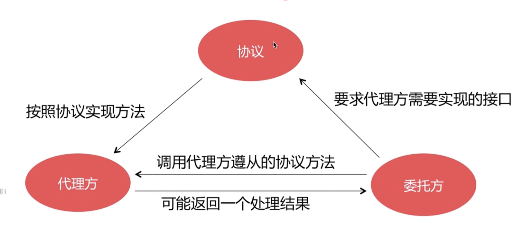

iOS面试题总结
1、UI视图相关面试题
1.1UITableview相关面试题
1.2数据源同步
1.3UI事件传递与响应
1.4UI图像显示原理
1.5UI卡顿掉帧原因
1.6异步绘制原理
1.7离屏渲染
2、OC语言
2.1OC相关面试题
2.2分类
2.4扩展
2.5代理
2.6通知
2.7KVO
2.8KVC
2.9属性关键字
3、Runtime
3.1对象、类对象、元类对象
3.2消息传递机制
3.3消息转发流程
3.4Method-Swizzling
4、内存
4.1引用计数表
4.2弱引用表
4.3ARC、MRC
4.4循环引用
4.5内存管理
5、Block
5.1Block本质
5.2截获变量特性
5.3内存管理
5.4循环引用
6、多线程
6.1GCD、nsoperation
6.2资源共享
6.3线程同步
6.4SpinLock等
7、RunLoop
7.1事件循环
7.2用户态
7.3核心态
7.4常驻线程
8、网络
8.1HTTPS
8.2对称加密算法
8.3非对称加密
8.4DNS解析
8.5HTTP、TCP
Published with GitBook
2.5代理
代理（Delegate）

代理是一种设计模式，以@protocol形式体现，一般是一对一传递。 一般以weak关键词以规避循环引用。
results matching "
"
No results matching "
"